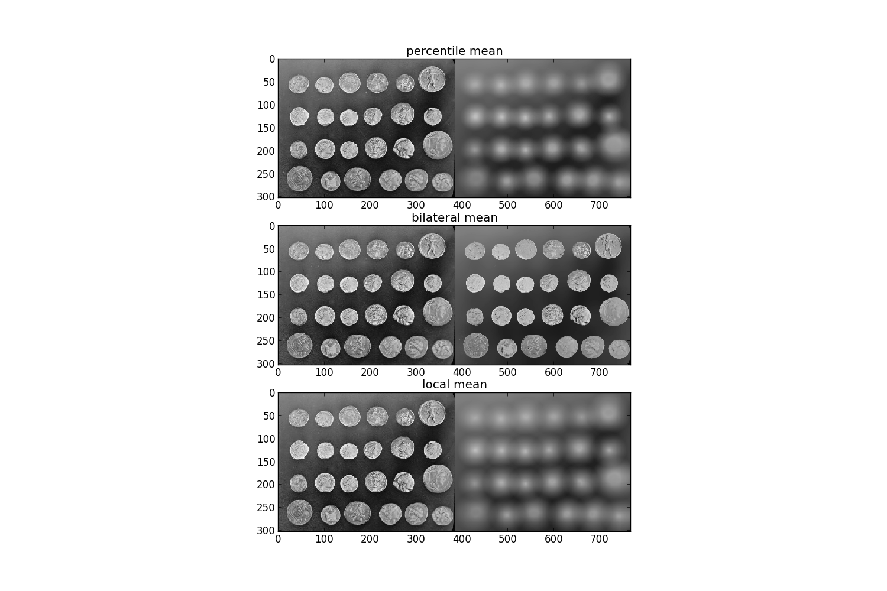

This example compares
build on the local histogram distribution local mean uses all pixels belonging to the structuring element to compute average gray level, percentile mean uses only values between percentiles p0 and p1 (here 10% and 90%), whereas bilateral mean uses only pixels of the structuring element having a gray level situated inside g-s0 and g+s1 (here g-500 and g+500). The filters are applied on a 16 bit image (actual bitdepth is 12bit).
Percentile and usual mean give here similar results, these filters smooth the complete image (background and details). Bilateral mean exhibits a high filtering rate for continuous area (i.e. background) while image higher frequencies remains untouched.
import numpy as np
import matplotlib.pyplot as plt
from skimage import data
from skimage.morphology import disk
import skimage.filter.rank as rank
a16 = (data.coins()).astype('uint16') * 16
selem = disk(20)
f1 = rank.percentile_mean(a16, selem=selem, p0=.1, p1=.9)
f2 = rank.bilateral_mean(a16, selem=selem, s0=500, s1=500)
f3 = rank.mean(a16, selem=selem)
# display results
fig, axes = plt.subplots(nrows=3, figsize=(15, 10))
ax0, ax1, ax2 = axes
ax0.imshow(np.hstack((a16, f1)))
ax0.set_title('percentile mean')
ax1.imshow(np.hstack((a16, f2)))
ax1.set_title('bilateral mean')
ax2.imshow(np.hstack((a16, f3)))
ax2.set_title('local mean')
plt.show()
Python source code: download (generated using skimage 0.8.0)